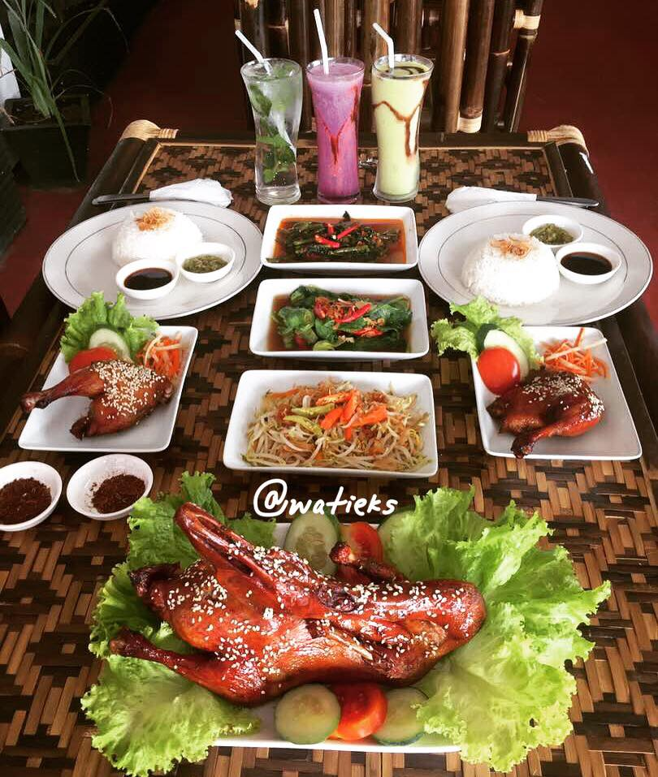
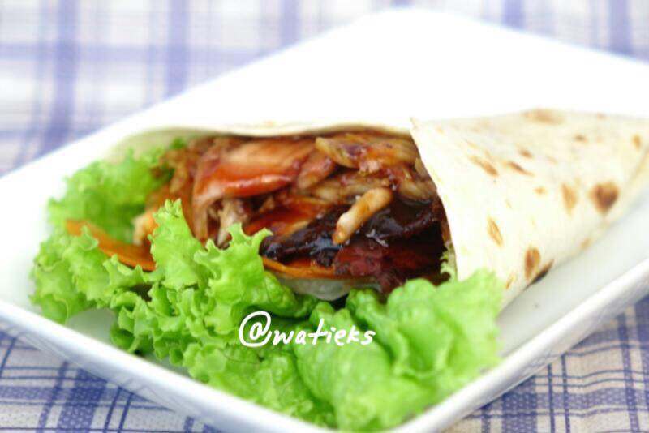
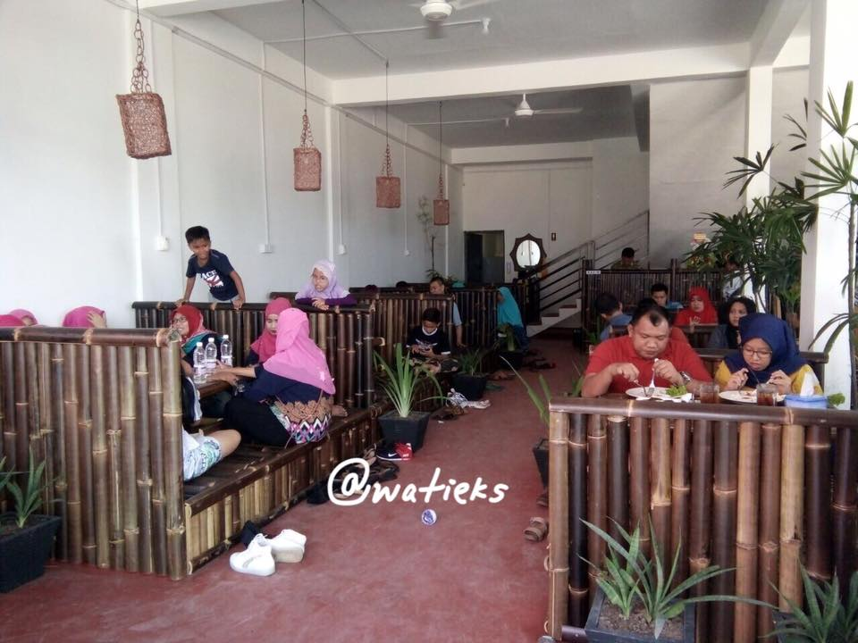

Bebek Bakar Batu
Bebek Bakar Batu adalah satu-satunya bebek bakar di Indonesia yang dipanggang di atas batu dan merupakan menu andalan di Rumah Makan yang menerapkan kosep Resto yaitu Resto Bebek Bakar Batu, Bebek Bakar Terenak Sedunia. Berada di tempat yang sangat strategis, hanya sekitar lima menit dari bandara Hang Nadim Batam dan mempunyai area parkir yang luas dengan suasana kampung. Menu bebek bakar ini diolah dengan penggabungan resep antara Asia dan Eropa sehingga bebek tidak berbau amis dan dagingnya yang empuk sehingga bisa dinikmati oleh semua kalangan. Selengkapnya disini........


